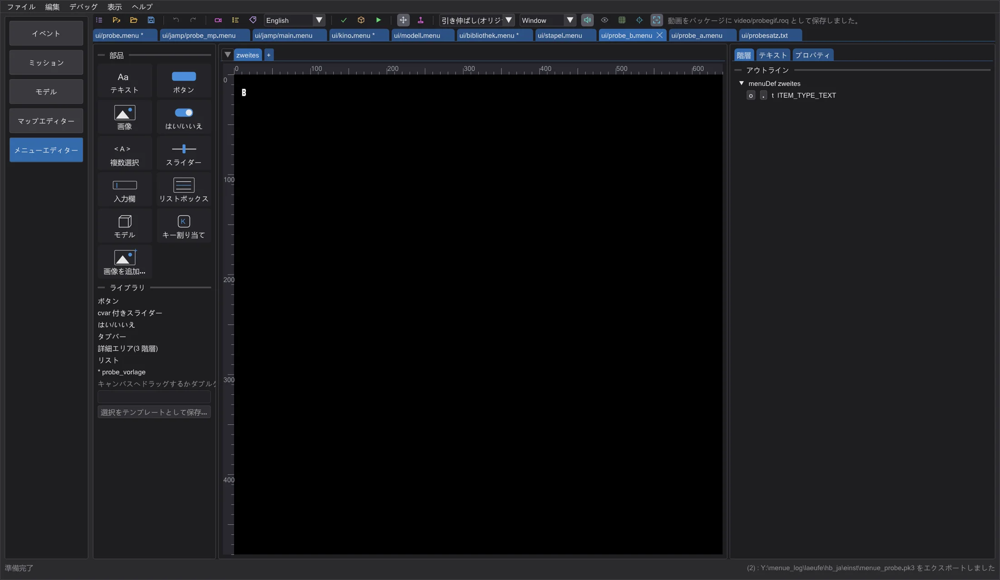
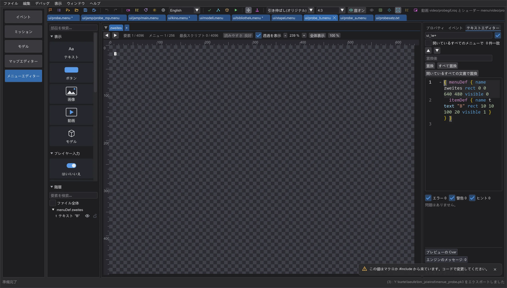
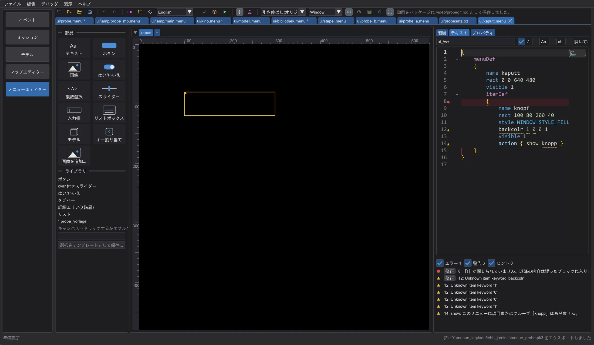
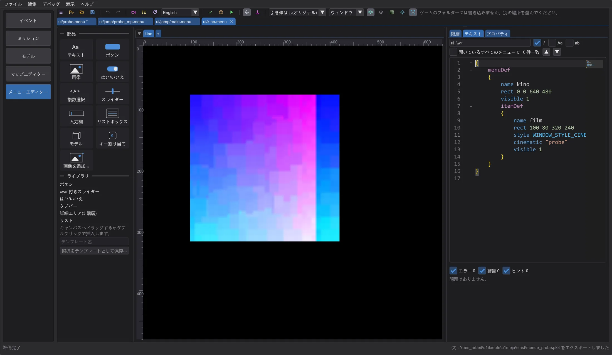
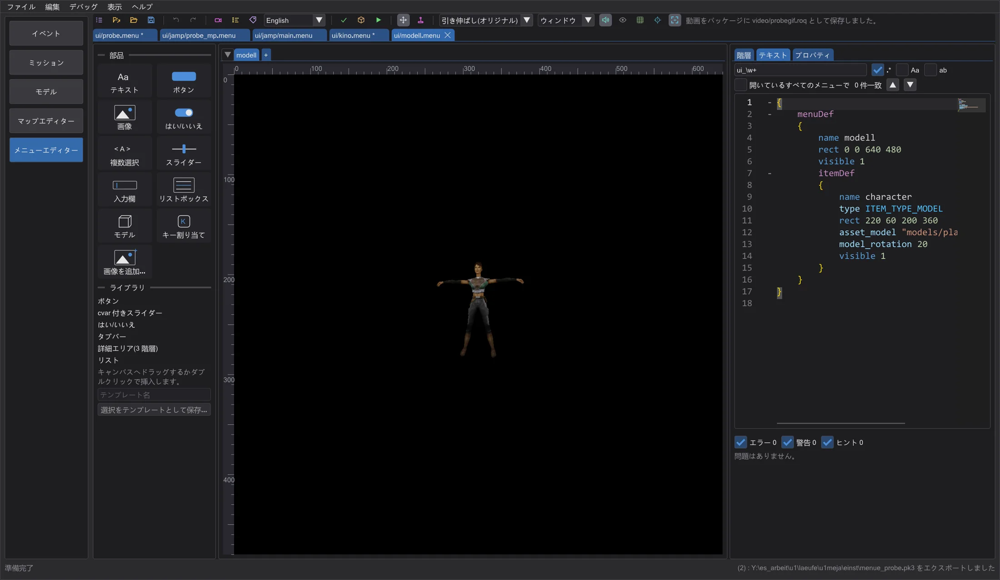
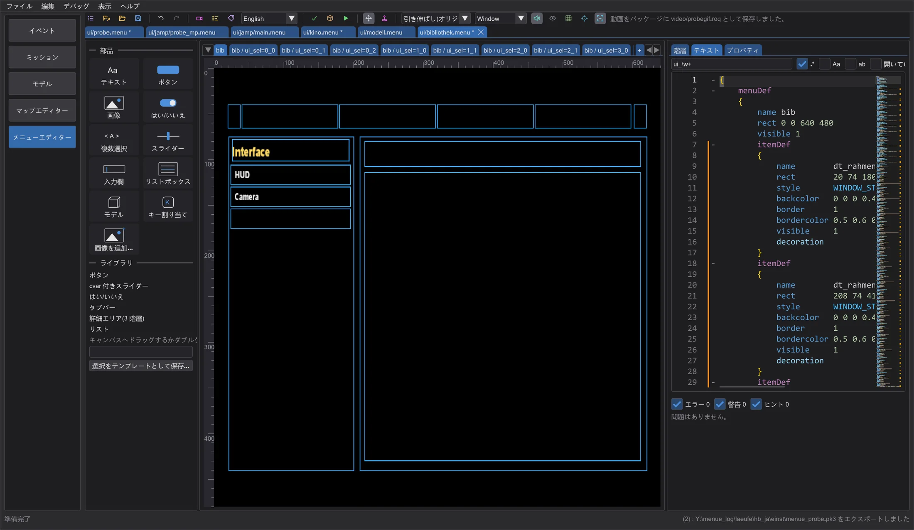
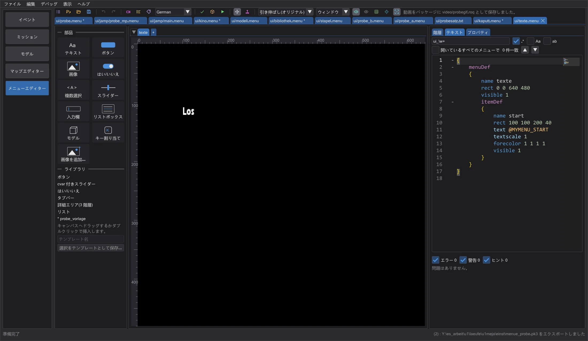

メニューエディター: プレビュー、検査、パッケージ
タブ付きの右列、入力中のライブ診断、ゲームと同じ動画・3D モデル・ライトセーバー、部品ライブラリ、複数言語のテキスト、サウンド、ゲーム向けの検査、ゲーム内テスト、TrueType からのフォント。
レイアウト: キャンバスを全高で#




右列には 階層(メニュー・グループ・項目。目のアイコンはプレビューでだけ隠し、鍵は動かないようにし、ドラッグで描画順を変えます)、テキスト(コードエディター、その下に問題一覧)、プロパティ(プロパティ、cvar、エンジンのメッセージ、スクリプトログをセクションで)があります。幅は区切り線で変え、タブと幅は保存されます。別のタブを開いていても、キャンバスをクリックするとテキストカーソルが itemDef に移ります。テキスト に切り替えるとその行が表示されています。テキストを下に置く旧レイアウトは設定(テキストエディターを下に表示(旧レイアウト))にあり、テキストエディターで長い行を折り返す も同じ場所です(オフなら長い行は Shift + マウスホイールで横にスクロール)。
ライブ診断#

入力すると、少し後にバックグラウンドでメニューが検査されます。波線が正確な場所を示し(赤はエラー、黄は警告、青はヒント)、余白に記号が出ます。マウスを重ねるとメッセージが表示されます。ゲームの原文がある場合はその文言(Unknown item keyword 'backcolr')と短い説明です。テキストの下の問題一覧から場所へ移動し、キャンバスの項目を選択できます。エラーと警告のある項目はキャンバス上で枠が付きます。
- 括弧
{ }・( )と引用符: 欠落・余分・対応違い。開きと閉じの両方の場所を示し、インデントから括弧が欠けている場所がわかります。 - 版ごとの不明なキーワード、シングルプレイが黙って 0 と読む数値、重複した menuDef 名、存在しない open/close/show/hide/setfocus の対象、既知の cvar の打ち間違いに見える cvar。
- ゲーム向けの検査(ゲーム向けにチェック と同じ規則): 制限、表示されない項目、欠けているファイル。
- 一覧の 修正 またはカーソル位置での Ctrl+. で、答えが明確な場合にクイック修正を適用します: 欠けた括弧、正しいキーワード、似た既存ファイル、既知の cvar。元に戻すで取り消せます。
動画、モデル、ライトセーバー#




cinematic と videoMap は RoQ 動画を再生します。動画をインポート は動画や GIF を RoQ に変換して video/ に置きます。ITEM_TYPE_MODEL はゲームのカメラ・光・回転でモデルを表示し、キャラクターメニューはゲームと同様に cvar とフィーダー(種族、頭、色)からプレイヤーを組み立てます。ライトセーバーは横向きで、柄と刃は .sab から(長さ、半径、刃の数、シングル/スタッフ、色)。光と芯はレンダラーと同じです。Movie Duels は cg_SFXSabers のすべてのスタイルに従います(次のページを参照)。
ライブラリ、詳細領域、メニューセット#

ライブラリ には既製の部品(ボタン、cvar 付きスライダー、はい/いいえ、タブバー、3 段階の詳細領域、リスト)があります。キャンバスにドラッグするかダブルクリックします。選択をテンプレートとして保存 は選択を独自のテンプレートにします。メニューセット全体を開く(menus.txt) は menus.txt のすべてのファイルを開き、スクリプトの open でそのメニューのファイルに切り替わります。
複数言語のテキストとサウンド#

テキスト にはゲームの全言語の独自 @ テキストと、メニューが使う @ キー(欠けているものはクリックで作成)が並びます。strings/<言語>/<パッケージ>.str(Jedi Academy、Movie Duels)または strip/<パッケージ>.sp(Jedi Outcast)としてパッケージに書き込みます。隣の言語欄でプレビューを切り替えます。操作 ではゲームと同じようにサウンドが鳴ります: soundLoop、play、playlooped、項目または assetGlobalDef のフォーカス音(サウンド でオフ)。
検査、書き出し、ゲーム内テスト#
ゲーム向けにチェック は開いているすべてのメニューを Jedi Academy、Jedi Outcast、Movie Duels 向けに検査します: 各版の制限(メニューごとの項目数、メニュー数、スクリプト長、複数値、色範囲、リスト列。超えた分はゲームが捨てます)、表示されない項目、欠けている画像・シェーダー・モデル・動画・フォント・サウンド、ほかの版が知らないキーワードや項目の種類。.pk3 をエクスポート は開いているすべてのメニューを、変更分のみエクスポート なら変更したものだけを書き出します。いずれもパッケージ(画像、動画、テキスト、フォント)を含み、ゲームが何かを失う場合は警告します。
ゲームでテスト は変更したメニューを設定フォルダーの menuetest に置き(ゲームフォルダーには置きません)、そこを指す fs_homepath を付けてゲームフォルダーの隣のゲームプログラムを起動します。これでゲームのファイルがあなたのファイルに置き換わります。別のフォルダーを指定できないプログラムでは、Mod フォルダーに書き込む前に確認します。
TrueType からのフォント#
TTF からフォントを作成 は .ttf や .otf をゲーム用フォントにします: fonts/<名前>.fontdat(ゲームが読む形式そのもの)と、メニューテキストの全文字(Windows-1252)を含む fonts/<名前>.tga。どちらもパッケージに入り、プレビューはすぐに使います。